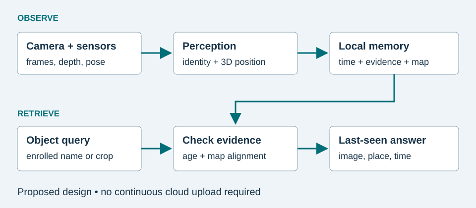

CS663 · Research tutorial · Khagendra Khatri
“Last seen on the side table at 9:12.”
A useful assistant connects an object to an observed place and time. This tutorial investigates how that memory could be built on a mobile device, with particular attention to older adults, offline use, and honest uncertainty.
Core boundary: a camera can record a sighting. It cannot establish what happened outside its view.
Begin the tutorialminutes, including the demo and practice
Basic Python and introductory linear algebra are helpful. No installation is needed to explore the tutorial.


What you will learn
- Distinguish object recognition, instance matching, and episodic visual retrieval.
- Convert an image observation into a position in a persistent room coordinate system.
- Implement a small memory-update and retrieval algorithm.
- Interpret research results without treating a benchmark as a product guarantee.
A research review and a design exercise
Ego4D established episodic-memory tasks that ask systems to retrieve evidence from first-person video. Its visual-query task uses an example image to identify a previously observed object. [1] We will review related methods, then assemble a deliberately simplified mobile design. The interactive example uses synthetic observations. It does not run a camera detector, SLAM, or a deployed assistive application.
Your route
Read the concepts, inspect the algorithm, work through the geometry, and spend three minutes changing the demo. Finish by interpreting the research results and answering the practice questions. Narration summarizes each page; the written examples provide the implementation detail.
Use the persistent chapter menu or the previous/next links. Every page has a numbered place in the sequence and a suggested time.